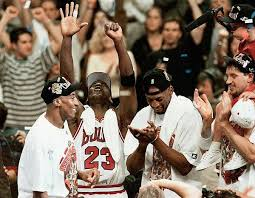
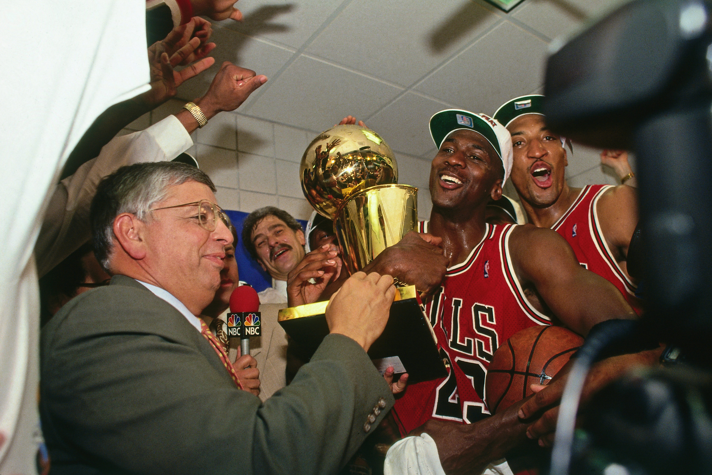

The team in 1996, the year after Jordan returned from retirement, was arguably the greatest team in NBA history. They held records for home and away wins and finished the season with a 72-10 record. This mark was the best in NBA history until the Golden State Warriors went 73-9 in 2015-16.
The Bulls would take out the Heat in the first round. Then would wipe out Patrick Ewing and the Knicks in the East Semifinals before finishing off the Orlando Magic in the Eastern Conference Finals.
In the Finals, the Bulls would face Gary Payton's and Shawn Kemp's Seattle SuperSonics. Despite this matchup being seen as outrageously uneven, the SuperSonics took the Bulls to six games before losing. The Bulls would have their fourth NBA Championship.
1997

The 1997 team was still one of the best ever, albeit not as good at the 1995-96 team. Jordan would lead his Bulls to 69-13 record, just barely missing out on 71 wins after losing the last two games of the season.
The Bulls entered the playoffs as the one seed in the East. They quickly swept the Washington Bullets in 3, then took out the Atlanta Hawks and Miami Heat, losing only one game in each series en route to the NBA Finals
In the Finals, the Bulls would face the Utah Jazz, having to face Karl Malone and John Stockton. The Bulls managed to take out the Jazz in six games, leading to their second title in as many years.
1998

The 1998 season was one of controversy and was considered to be the "Last Dance" for the current group that made up the Chicago Bulls. Despite rumors swirling about the future of the franchise, the Bulls continued to play at a very high level and managed to win 62 games in the regular season. Jordan would win his fifth league MVP in this season.
Playoffs:
East Quarterfinals: 1. Bulls vs. 8. Nets. The Bulls would easily sweep the Nets in three quick games.
East Semifinals: 1. Bulls vs. 4. Hornets. Charlotte would fall to the defending champions in five games.
East Finals: 1. Bulls vs. 2. Pacers. This series was an absolute battle. Lead by Reggie Miller, the Pacers would take the Bulls to seven before losing the series.
NBA Finals: 1. Bulls vs. 1. Jazz. In a rematch of last years Finals, the same score would result from the series. The Bulls would finish off the Jazz in six and complete the second three peat in franchise history.